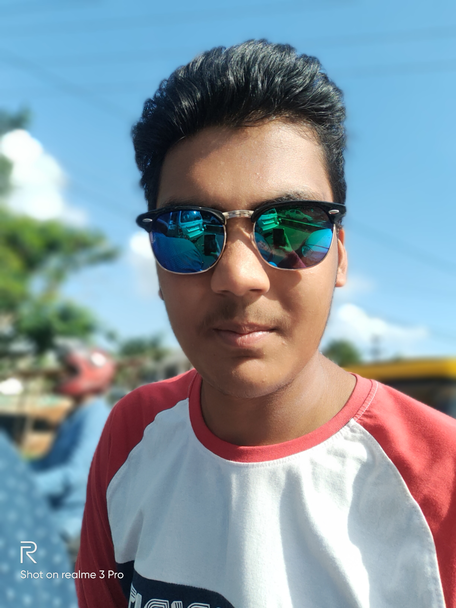

 My name is Rudramadhaba mishra. I am currently pursuing my B.Tech in electronics and telecommunication engineering department at Veer Surendra Sai University of Technology. I am from bhubaneswar. I have completed my primary and intermediate education from B.J.E.M School bhubanswar.
Coding and gaming is pure love for me. Any new technology fascinates me a lot. Opensouce contributions and hackathons drags all my attention really committed to contribute there freely. Listening to music and binge watching series also adds into the list.
I am having hold on programming language such as C and C++. I am into social media and digital marketing. I have currently doing frontend development with basics html and css. I am cuurently learning more frontend tools such as JS and willing to do full stack development later on.
I love to read books on new technology. I really like to play cricket and listen to music. I usually love to code and play competitive games such as CS-GO and Valorant.
Currently I am working as an Intern in Namekart.com as a data analyst position. I am also currently a Technical Team Member of Webdevelopment domain of Microsoft Learn Student Ambassador-SANINS community. I am also a Technical Team Member in Idea Innovation Cell VSSUT Burla. I also work for Codxcrypt as well as in GCC(G-Tribe) as developer role. I have also done multiple internships as well as awarded best intern in various social media marketting internships.
Do check my social media handles and feel free to interact. Thanks!